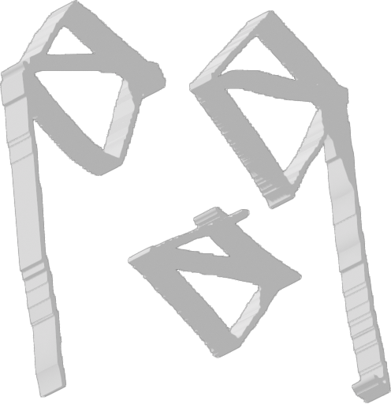

Indies Lifestyle Media 間｜MA
現在、
1
人が平場に立ちました。
言葉は強い力を持つが、その解釈は受け手の背景や状況に合わせ落とし所を見つけ出す。文章を書き留める際、以前はそんなニュアンスに強制力を持たせたい気持ちもあったが、今は読み手の脳や心の中で独自に育まれる正解に正確性があると定められるようになってきた。人らしい自由は、各々にあって、その反響が目の前で感受感情化され、一見複雑そうな記憶に組み込まれる。人は何かを受け、それを情と繋げ、それを振り子のように繰り返し自身を形成していく。人は、感じる生物なのだ。感じぬ存在は、果たして人と言えるのだろうか？少なくとも、私は「感じぬ人」だった。
宮嶋 孝尚, Yoshinao Miyajima, Chief Creative Officer of Manaka Ltd.
合理化の極致にある現代社会に、
"間" という新しい文化を届ける
インディーズ・ライフスタイルメディア。
間を巡る 4 つの門
-
考え方Notion 間、当事者化への提案
まずは、この人の話から。
「間」とは何か、なぜ要るのだろうか。
いまの考えを、そのまま感じてみる -
研究室Lab 間、定義化への試み （ 試作 ）
感情と言葉を、行ったり来たり。
これはどういうこと？ と調べたり比べたり。
まだまだ、試行錯誤の過程です -
番組Channel 間、流通化への多手
気配から感じとる。
話したり、動いたり、ふと黙ったり。
多様な「間」が生まれ、その解釈が浮遊する -
道具Do 間、個人化への導線
暮らしの中の、深呼吸。
「間」をつくる道具や、手触りのような感触。
気になるところから、つなげてみる- Tips （ 準備中 ）
- Device
ニュース
- 異能の表現者たち #3 綱島 一裕 ぱっと出力すれば一瞬で終わる。それをあえて、手で描く職人の姿を追う。
- 異能の表現者たち #2 宮嶋 孝尚 大切な人に語りかけたい、触れたい、という素朴な想いから生まれた「ふれることのできる位牌・星牌(せいはい)」。この星牌は、素材や文字、そして暮らしとの距離感を問い直すなかで、やがて「祈りの道具屋まなか」としての現在地へとつながっていきます。合理化が加速するいま、暮らしのなかに立ち止まる瞬間や「間」をひらくことの意味とは。
- 死を、教えてくれ。 #2 三浦 豪太 死のキワに立ち、自然と対峙し続けてきたプロスキーヤーであり、登山家・博士(医学)の三浦豪太。 11/18 動画を追加
